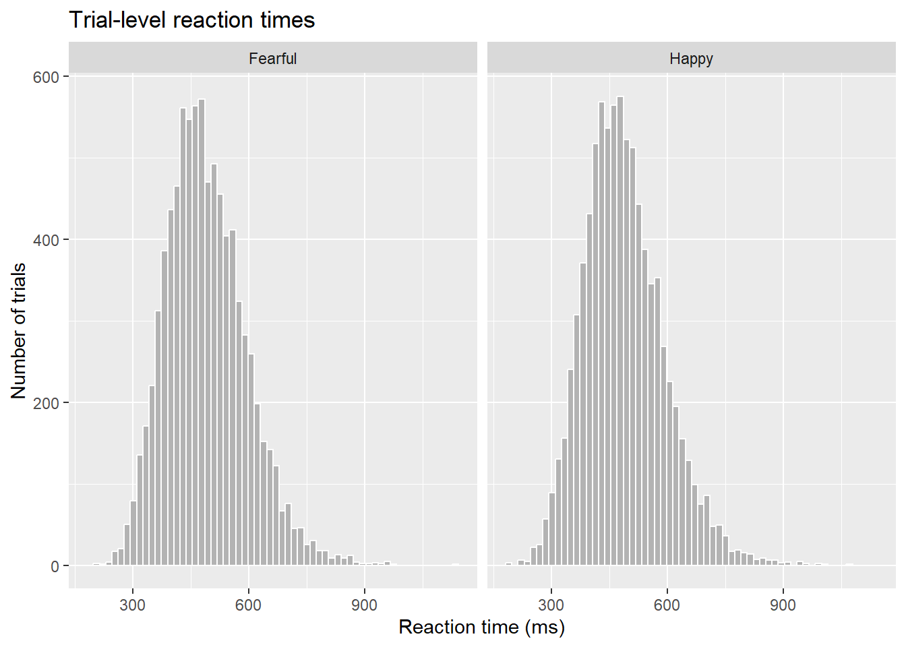
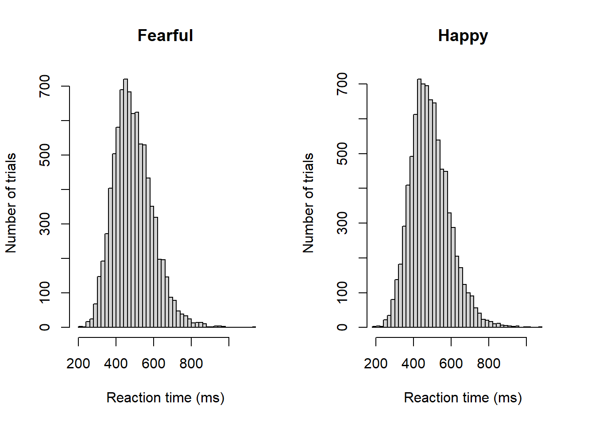
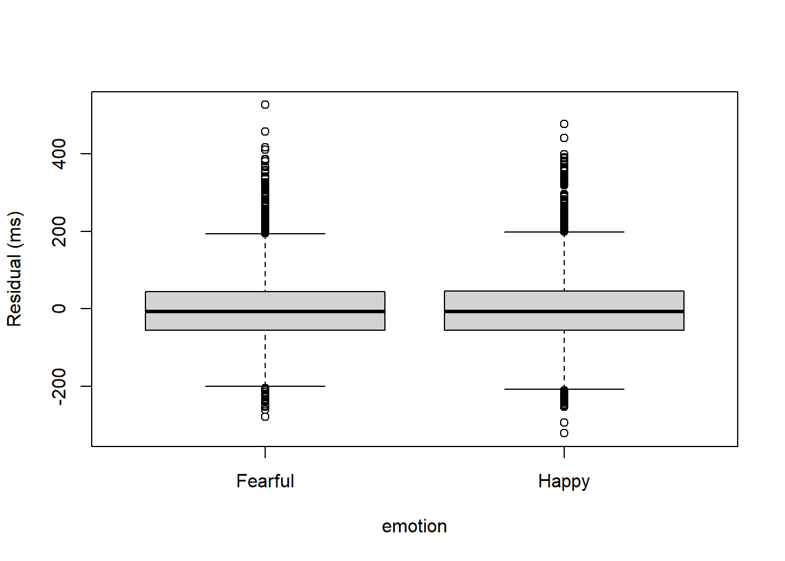
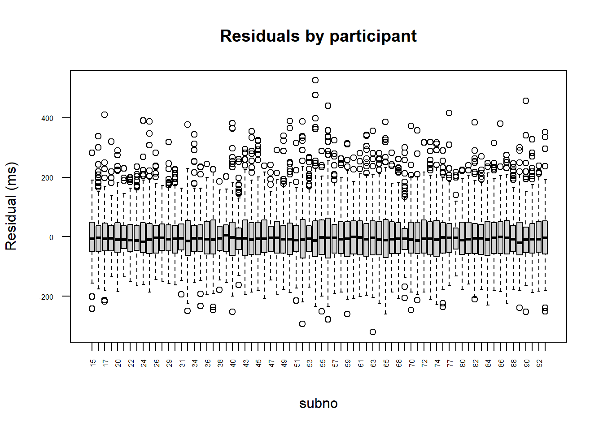
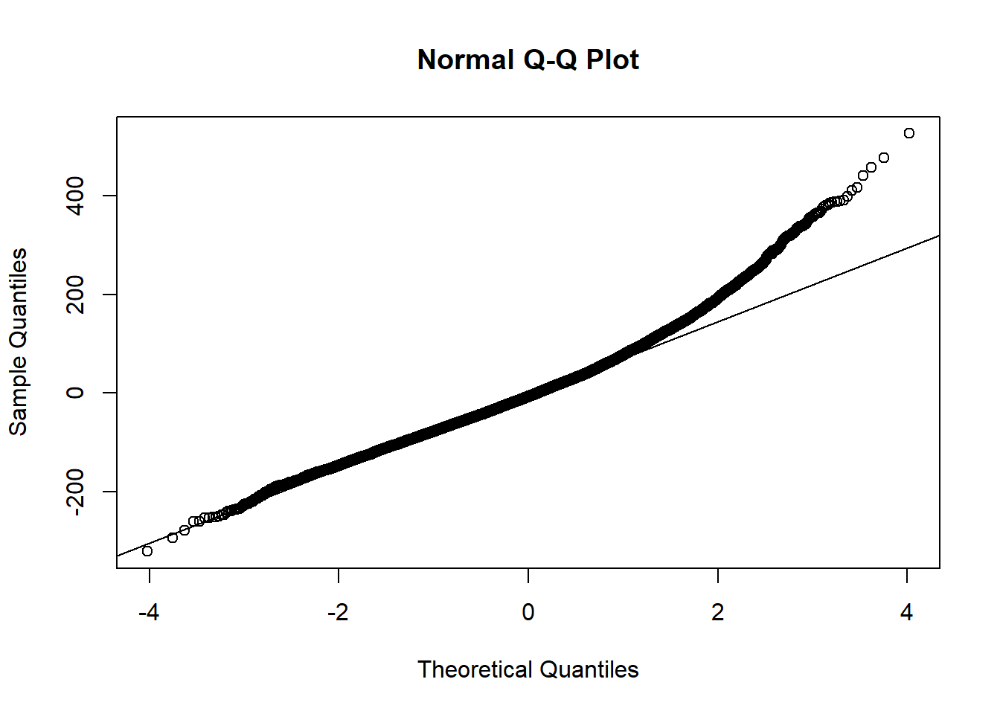
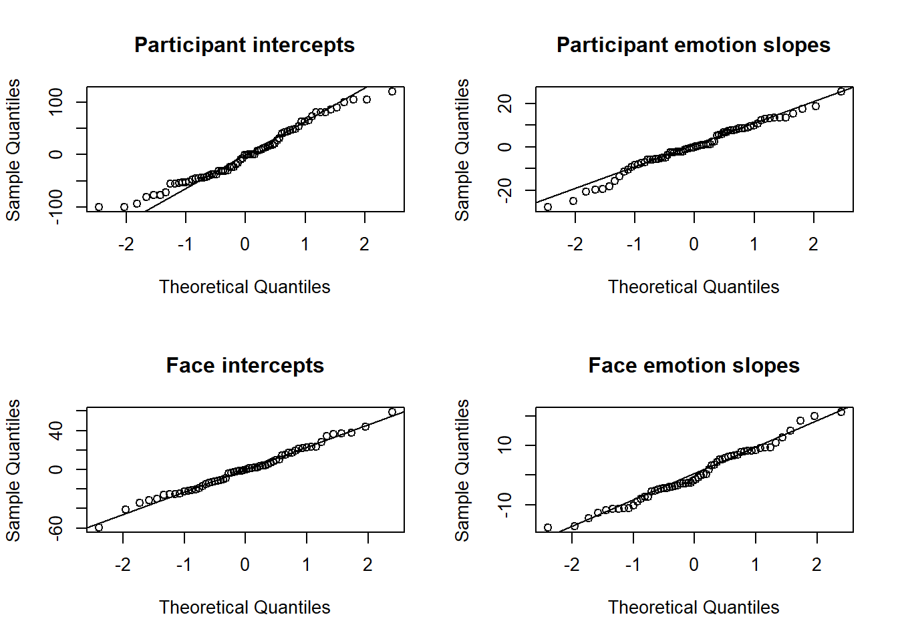
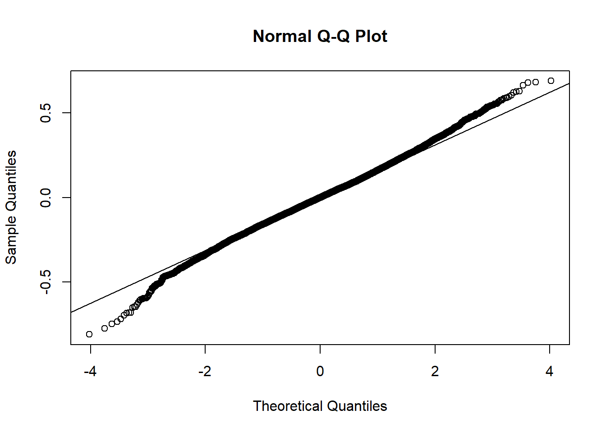

1 - Perform a complete mixed effects model analysis
2 - Perform and interpret assumption checks
3 - See a full APA write-up of a mixed effects analysis study
Materials Used:
We will use the packages ggplot2, lme4, lmerTest and knitr, these are already installed on the RStudio Server but if you are working on your own Laptop you may need to install them.
CREATE A NEW PROJECT
Just as we did in previous weeks we are going to start by creating a new project for this week’s lab. Download the data from the VLE (In the Week 6 Homework Materials section) and then copy it in the folder you created your project in. You can also find a direct download link for the data here: Github Link.
If you are working on the RStudio Server, then you will need to download the file to your computer and then upload it to the correct folder on the server.
Also create a new script in this folder so you can copy the lines of code needed to run this analysis yourself using just that script.
Now let’s load the packages that we will need for this analysis.
library(ggplot2)library(lme4)
Loading required package: Matrix
library(lmerTest) # load after lme4: adds Satterthwaite df and p-values
Attaching package: 'lmerTest'
The following object is masked from 'package:lme4':
lmer
The following object is masked from 'package:stats':
step
library(knitr)
SECTION A. THE DATASET
The data set we will use this week is a modified version of the one we used in the Week 4 Lab and the same as used in the Week 6 Homework (Lab 6. Section A).
The full explanation can be found there (Lab 4. Section A) but here is a brief summary:
The face RT dataset was collected as a test of the role of trait anxiety in healthy participants (measured by the Spielberger Trait Anxiety Scale; variable name in dataset = traitanx) on the ability to identify the emotional expression on faces.
In the original data set we had only the mean for the response to fearful and happy faces for each participant as well as a few covariates:
Attentional Control Scale (ACS)
Spielberger Trait Anxiety Scale (traitanx)
Age (Age)
Gender (Gender; 1 = male, 2 = female)
Handedness (Handedness; 1 = Right, 2 =Left)
However, in the new data set we have the data for every single trial (240 per participant). The trial-level data were simulated so that each participant’s means match the original dataset.
So in this version of the data set we have some additional variables that describe each trial:
subno - The subject number of the participant (15-93)
trialnum - The number of this particular trial (1-240)
emotion - The emotion of the face displayed on that trial (Happy or Fearful)
face_id - The ID of the particular face shown, each participant saw each face with both a Happy and Fearful emotion
RT - the reaction time in seconds on that particular trial
The first thing we need to do is set up our categorical variables (subno,emotion,face_id) as factors. We want to use the Fearful type as the reference level for emotion.
To check the reference level of a factor we can use levels(df$emotion) and the reference level is whichever is returned first.
levels(df$emotion)
[1] "Fearful" "Happy"
If we check the summary of the data set we can see we have some participants with missing data in traitanx and ACS.
summary(df)
subno trialnum emotion face_id
15 : 240 Min. : 1.00 Fearful:9000 1 : 300
16 : 240 1st Qu.: 60.75 Happy :9000 2 : 300
17 : 240 Median :120.50 3 : 300
19 : 240 Mean :120.50 4 : 300
20 : 240 3rd Qu.:180.25 5 : 300
21 : 240 Max. :240.00 6 : 300
(Other):16560 (Other):16200
RT Age Gender Handedness
Min. :0.1903 Min. :18.00 Min. :1.000 Min. :1.00
1st Qu.:0.4168 1st Qu.:19.00 1st Qu.:2.000 1st Qu.:1.00
Median :0.4793 Median :21.00 Median :2.000 Median :1.00
Mean :0.4902 Mean :23.03 Mean :1.813 Mean :1.11
3rd Qu.:0.5537 3rd Qu.:25.00 3rd Qu.:2.000 3rd Qu.:1.00
Max. :1.1347 Max. :57.00 Max. :2.000 Max. :2.00
NAs :480
ACS traitanx
Min. :33.00 Min. :20.00
1st Qu.:44.00 1st Qu.:34.00
Median :50.00 Median :41.00
Mean :49.93 Mean :41.95
3rd Qu.:55.00 3rd Qu.:47.00
Max. :66.00 Max. :70.00
NAs :480 NAs :240
Because this data is in long format the NAs are for the number of trials instead of participants.
We can use the unique() function to create a dataframe with one row per participant which makes it clearer in terms of number of participants.
pp <-unique(df[, c("subno", "traitanx", "ACS", "Age")]) # one row per participantsummary(pp)
subno traitanx ACS Age
15 : 1 Min. :20.00 Min. :33.00 Min. :18.00
16 : 1 1st Qu.:34.50 1st Qu.:44.00 1st Qu.:19.00
17 : 1 Median :41.00 Median :50.00 Median :21.00
19 : 1 Mean :41.95 Mean :49.93 Mean :23.03
20 : 1 3rd Qu.:47.00 3rd Qu.:55.00 3rd Qu.:25.00
21 : 1 Max. :70.00 Max. :66.00 Max. :57.00
(Other):69 NAs :1 NAs :2
Mixed-effects models can handle participants having different numbers of observations, but they cannot use rows where a predictor is missing. Models containing these predictors drop those participants automatically, so models fitted to different data cannot be compared with likelihood ratio tests or AIC. To keep every comparison fair, we use the SAME participants for every model: those with complete data on the predictors.
Previously we have used subset() and we will do so again, however, this time we will also use a function called droplevels(). Using subset() only leaves the three excluded participants as empty levels of subno, which can cause problems in later steps.
dat <-droplevels(subset(df, !is.na(traitanx) &!is.na(ACS)))
The next thing we are going to do is to centre the data by subtracting the mean. The reason we want to centre is our model contains an interaction, emotion * traitanx. With an interaction, the coefficient for emotion is no longer “the effect of emotion”. It is the effect of emotion when trait anxiety is 0. The intercept has a similar meaning: it is the predicted RT for a fearful face when trait anxiety, attentional control and age are all 0. Nobody in our sample has a trait anxiety of 0 (the lowest score is 20), or an attentional control or age of 0, so these coefficients would describe people who don’t exist. They can even look misleading.
Centring means subtracting the sample mean from each predictor, so that 0 now means “average”. Then:
the intercept is the predicted RT for a fearful face for a participant with average trait anxiety, attentional control and age;
the emotion coefficient is the happy–fearful difference for an average participant, which is what we actually want to know;
the traitanx coefficient is its slope for fearful faces.
One thing to note is that this approach works because we have an equal number of trials for each participant. Therefore, the mean over rows equals the mean over participants. However, if we did have unequal numbers of trials per participant, the row mean would weight people with more trials more heavily. So we would want to calculate mean per participant.
One final thing we are going to do is to change the units of our RT variable from seconds to milliseconds (ms), this will make it easier to see some of the effects on variance that would otherwise be very small numbers.
What is the code to do this and to create a new column in dat called RT_ms?
dat$RT_ms <- dat$RT *1000
SECTION B. VISUALISING THE DATA
Let’s first examine the distribution of our RT data but split by trial, below is the ggplot2 version of this:
ggplot(dat, aes(x = RT_ms)) +geom_histogram(bins =60, fill ="grey70", colour ="white") +facet_wrap(~ emotion) +labs(x ="Reaction time (ms)", y ="Number of trials", title ="Trial-level reaction times")

But we could have used the base R hist() function like this:
par(mfrow =c(1, 2)) # two plots side by sidehist(dat$RT_ms[dat$emotion =="Fearful"], breaks =60, xlim =range(dat$RT_ms),main ="Fearful", xlab ="Reaction time (ms)", ylab ="Number of trials")hist(dat$RT_ms[dat$emotion =="Happy"], breaks =60, xlim =range(dat$RT_ms),main ="Happy", xlab ="Reaction time (ms)", ylab ="Number of trials")

Using either approach we can see that trial-level RTs are right-skewed, as RT data usually are.
Is this an issue for mixed-effects models? Does it violate any of the assumptions?
Not directly: the assumptions concern the residuals and random effects, not the raw RTs. But skewed RTs often lead to skewed residuals, so we will check later.
30.8% of the variance in RT lies between participants and 69.2% is residual (trial-to-trial) variance.
As this design is crossed (every participant sees every face), we can also fit a model in which we fit random intercepts for the face_id factor.
Perform this model and again calculate the ICC, for all three factors. What does the ICC indicate?
## 3b. Faces: every participant sees every face, so participants and faces are CROSSED ---m0b <-lmer(RT_ms ~1+ (1| subno) + (1| face_id), data = dat)summary(m0b)
Linear mixed model fit by REML. t-tests use Satterthwaite's method [
lmerModLmerTest]
Formula: RT_ms ~ 1 + (1 | subno) + (1 | face_id)
Data: dat
REML criterion at convergence: 202600.4
Scaled residuals:
Min 1Q Median 3Q Max
-3.8237 -0.6657 -0.0837 0.5518 6.3078
Random effects:
Groups Name Variance Std.Dev.
subno (Intercept) 3344.4 57.83
face_id (Intercept) 491.1 22.16
Residual 7022.5 83.80
Number of obs: 17280, groups: subno, 72; face_id, 60
Fixed effects:
Estimate Std. Error df t value Pr(>|t|)
(Intercept) 489.806 7.419 94.163 66.02 <2e-16 ***
---
Signif. codes: 0 '***' 0.001 '**' 0.01 '*' 0.05 '.' 0.1 ' ' 1
30.8% of the variance in RT lay between participants, 4.5% between faces, and 64.7% was residual (trial-to-trial) variance.
Our next model will add emotion as a fixed effect, still with random intercepts for participants (subno) and face_id:
## 3c. Add emotion as a fixed effect (random intercepts only) -----------------m1 <-lmer(RT_ms ~ emotion + (1| subno) + (1| face_id), data = dat)summary(m1)
Linear mixed model fit by REML. t-tests use Satterthwaite's method [
lmerModLmerTest]
Formula: RT_ms ~ emotion + (1 | subno) + (1 | face_id)
Data: dat
REML criterion at convergence: 202594.6
Scaled residuals:
Min 1Q Median 3Q Max
-3.8098 -0.6645 -0.0833 0.5513 6.2940
Random effects:
Groups Name Variance Std.Dev.
subno (Intercept) 3344.4 57.83
face_id (Intercept) 491.1 22.16
Residual 7021.5 83.79
Number of obs: 17280, groups: subno, 72; face_id, 60
Fixed effects:
Estimate Std. Error df t value Pr(>|t|)
(Intercept) 491.000 7.446 95.561 65.939 <2e-16 ***
emotionHappy -2.388 1.275 17148.000 -1.873 0.0611 .
---
Signif. codes: 0 '***' 0.001 '**' 0.01 '*' 0.05 '.' 0.1 ' ' 1
Correlation of Fixed Effects:
(Intr)
emotionHppy -0.086
Next we are going to fit a series of different models in which we allow different aspects to vary:
## 3d. Let the effect of emotion vary -------------------------------------------# The emotion effect might differ between PARTICIPANTS (some people show a bigger# fearful-vs-happy difference) and between FACES (some faces are more effective).m2a <-lmer(RT_ms ~ emotion + (1+ emotion | subno) + (1| face_id), data = dat) # slopes by participantm2b <-lmer(RT_ms ~ emotion + (1+ emotion | subno) + (1+ emotion | face_id), data = dat) m2c <-lmer(RT_ms ~ emotion + (1| subno) + (1+ emotion | face_id), data = dat)
For each of the models (m2a,m2b,m2c) what are we fitting random slopes for?
m2a - slopes by participant m2b - slopes by both m2c - slopes by face
One important thing to test for in mixed model fitting is whether the fit is singular. A singular fit means a variance is estimated at (almost) zero or a correlation at +/-1. This occurs when the model is more complex than the data support.
If you encounter singular fits in your own models you can attempt to find a different fitting algorithm using the lme4::allFit() function, but it is often a sign that your model is overly complex given your data and you should think about sticking with a simpler model with less parameters.
Here we can see that none of our four models have singular fits.
Why are the AIC and BIC numbers here slightly different from those in the model comparison output table above?
The anova() function refits using ML, instead of the original REML.
If we wanted to get the values from the ML version we could use this code:
cmp <-anova(m1, m2a, m2c, m2b)
refitting model(s) with ML (instead of REML)
model_labels <-c(m1 ="Intercepts only (participant, face)",m2a ="+ emotion slopes by participant",m2c ="+ emotion slopes by face",m2b ="+ emotion slopes by both")#create a nicer output using a dataframedata.frame(model = model_labels[rownames(cmp)],npar = cmp$npar, AIC =round(cmp$AIC, 1), BIC =round(cmp$BIC, 1), row.names =NULL)
model npar AIC BIC
1 Intercepts only (participant, face) 5 202612.8 202651.6
2 + emotion slopes by participant 7 202574.3 202628.6
3 + emotion slopes by face 7 202585.9 202640.2
4 + emotion slopes by both 9 202546.4 202616.3
Which of the 4 models provides the best fit for the data?
The model with the lowest AIC and BIC values is m2b which allows random intercepts and emotion slopes by both participant and face_id.
We can also see this from the log-likelihood tests where m2b was a significant improvement over both m2a and m2c, both of which were significant improvements on the intercepts only model m1.
Finally we can examine how the Estimate, Standard Errors and p values change as we make the model more realistic.
Use the summary() function and find these statistics for the model with random intercepts, the model with random slopes and intercepts per participant, the model with randoms slopes and intercepts per face_id, and finally the model with random slopes and intercepts for both participants and face_id. What do you notice?
We can use the summary() function on each of the models like this:
summary(m1) #random intercepts
Linear mixed model fit by REML. t-tests use Satterthwaite's method [
lmerModLmerTest]
Formula: RT_ms ~ emotion + (1 | subno) + (1 | face_id)
Data: dat
REML criterion at convergence: 202594.6
Scaled residuals:
Min 1Q Median 3Q Max
-3.8098 -0.6645 -0.0833 0.5513 6.2940
Random effects:
Groups Name Variance Std.Dev.
subno (Intercept) 3344.4 57.83
face_id (Intercept) 491.1 22.16
Residual 7021.5 83.79
Number of obs: 17280, groups: subno, 72; face_id, 60
Fixed effects:
Estimate Std. Error df t value Pr(>|t|)
(Intercept) 491.000 7.446 95.561 65.939 <2e-16 ***
emotionHappy -2.388 1.275 17148.000 -1.873 0.0611 .
---
Signif. codes: 0 '***' 0.001 '**' 0.01 '*' 0.05 '.' 0.1 ' ' 1
Correlation of Fixed Effects:
(Intr)
emotionHppy -0.086
summary(m2a) #+participants slopes
Linear mixed model fit by REML. t-tests use Satterthwaite's method [
lmerModLmerTest]
Formula: RT_ms ~ emotion + (1 + emotion | subno) + (1 | face_id)
Data: dat
REML criterion at convergence: 202551.2
Scaled residuals:
Min 1Q Median 3Q Max
-3.7894 -0.6613 -0.0848 0.5490 6.3967
Random effects:
Groups Name Variance Std.Dev. Corr
subno (Intercept) 3455.7 58.79
emotionHappy 179.8 13.41 -0.20
face_id (Intercept) 491.3 22.17
Residual 6976.8 83.53
Number of obs: 17280, groups: subno, 72; face_id, 60
Fixed effects:
Estimate Std. Error df t value Pr(>|t|)
(Intercept) 491.000 7.549 93.342 65.039 <2e-16 ***
emotionHappy -2.388 2.028 71.000 -1.178 0.243
---
Signif. codes: 0 '***' 0.001 '**' 0.01 '*' 0.05 '.' 0.1 ' ' 1
Correlation of Fixed Effects:
(Intr)
emotionHppy -0.194
summary(m2c) #+face slopes
Linear mixed model fit by REML. t-tests use Satterthwaite's method [
lmerModLmerTest]
Formula: RT_ms ~ emotion + (1 | subno) + (1 + emotion | face_id)
Data: dat
REML criterion at convergence: 202562.9
Scaled residuals:
Min 1Q Median 3Q Max
-3.8675 -0.6647 -0.0851 0.5489 6.2041
Random effects:
Groups Name Variance Std.Dev. Corr
subno (Intercept) 3344.0 57.83
face_id (Intercept) 552.9 23.51
emotionHappy 137.7 11.73 -0.35
Residual 6987.4 83.59
Number of obs: 17280, groups: subno, 72; face_id, 60
Fixed effects:
Estimate Std. Error df t value Pr(>|t|)
(Intercept) 491.000 7.515 97.784 65.340 <2e-16 ***
emotionHappy -2.388 1.978 58.992 -1.207 0.232
---
Signif. codes: 0 '***' 0.001 '**' 0.01 '*' 0.05 '.' 0.1 ' ' 1
Correlation of Fixed Effects:
(Intr)
emotionHppy -0.162
summary(m2b) #+both slopes
Linear mixed model fit by REML. t-tests use Satterthwaite's method [
lmerModLmerTest]
Formula: RT_ms ~ emotion + (1 + emotion | subno) + (1 + emotion | face_id)
Data: dat
REML criterion at convergence: 202518.9
Scaled residuals:
Min 1Q Median 3Q Max
-3.8475 -0.6624 -0.0871 0.5461 6.3069
Random effects:
Groups Name Variance Std.Dev. Corr
subno (Intercept) 3455.8 58.79
emotionHappy 180.4 13.43 -0.20
face_id (Intercept) 553.2 23.52
emotionHappy 138.3 11.76 -0.35
Residual 6942.4 83.32
Number of obs: 17280, groups: subno, 72; face_id, 60
Fixed effects:
Estimate Std. Error df t value Pr(>|t|)
(Intercept) 491.000 7.617 95.519 64.460 <2e-16 ***
emotionHappy -2.388 2.533 82.743 -0.943 0.349
---
Signif. codes: 0 '***' 0.001 '**' 0.01 '*' 0.05 '.' 0.1 ' ' 1
Correlation of Fixed Effects:
(Intr)
emotionHppy -0.237
However, the code below extracts the important statistics for this comparison so we can more easily compare them. Check that you can find where these statistics come from in the summary() output.
# The emotion effect: compare what the p-value does as the model becomes more realisticsapply(list(`random intercepts`= m1, `+ participant slopes`= m2a,`+ face slopes`= m2c, `+ both`= m2b),function(m) round(coef(summary(m))["emotionHappy", c("Estimate", "Std. Error", "Pr(>|t|)")], 4))
random intercepts + participant slopes + face slopes + both
Estimate -2.3881 -2.3881 -2.3881 -2.3881
Std. Error 1.2749 2.0280 1.9780 2.5333
Pr(>|t|) 0.0611 0.2429 0.2321 0.3486
The estimate. Every participant sees the same number of fearful and happy trials, and every face appears equally often in both expressions. In this balanced design the emotionHappy estimate is just the difference between the average happy and fearful RT (−2.39 ms), so it doesn’t depend on the random-effects structure.
The standard error. The random-intercepts model assumes that the effect of emotion is identical for every participant and every face. Under that assumption, all 17,280 trials are evidence about one single effect, so the estimate looks very precise (SE = 1.27). But the effect of emotion isn’t the same for everyone. It varies between participants and between faces. The average we estimate is only as precise as our samples of 72 people and 60 faces allow, however many trials each one completed. Collecting more trials from the same people doesn’t tell us whether a different sample of people would show a different average.
The uncertainty from each source adds up. Squaring the standard error gives the variance of the estimate:
Source
Contribution to the variance of the estimate
Trial-to-trial noise (all that random intercepts counts)
1.6
Participants differ in their emotion effect
2.5
Faces differ in their emotion effect
2.3
Total
6.4 (and √6.4 = 2.53, the SE of the full model)
The p values follow the same pattern, with the closest to significance being the random intercepts model, the others have higher p values. None of them show a significant emotionHappy effect.
Don’t choose a model because of its p-value. The random-intercepts model’s p = .061 isn’t “nearly significant”. It is too small, because the model assumes something the data contradict (The model comparison earlier showed that allowing the emotion effect to vary fits much better). Choose the model on the basis of the design and model comparison, then report whatever p-value it gives.
SECTION D. ADDITIONAL PREDICTORS
Once we have our best model we can add in the other predictors that the researchers were interested in traitanx_c, ACS_c, and Age_c. (We are using the _c versions because we mean centred them earlier).
Linear mixed model fit by REML. t-tests use Satterthwaite's method [
lmerModLmerTest]
Formula: RT_ms ~ emotion * traitanx_c + ACS_c + Age_c + (1 + emotion |
subno) + (1 + emotion | face_id)
Data: dat
REML criterion at convergence: 202505.1
Scaled residuals:
Min 1Q Median 3Q Max
-3.8456 -0.6628 -0.0871 0.5463 6.3055
Random effects:
Groups Name Variance Std.Dev. Corr
subno (Intercept) 3190.1 56.48
emotionHappy 182.1 13.49 -0.25
face_id (Intercept) 553.2 23.52
emotionHappy 138.3 11.76 -0.35
Residual 6942.4 83.32
Number of obs: 17280, groups: subno, 72; face_id, 60
Fixed effects:
Estimate Std. Error df t value Pr(>|t|)
(Intercept) 491.0000 7.3709 93.3001 66.613 < 2e-16 ***
emotionHappy -2.3881 2.5380 82.3303 -0.941 0.34949
traitanx_c -1.9917 0.7462 68.9177 -2.669 0.00947 **
ACS_c 0.2598 0.9144 67.9987 0.284 0.77719
Age_c -0.3368 1.0267 67.9987 -0.328 0.74389
emotionHappy:traitanx_c -0.1629 0.2117 70.0026 -0.770 0.44414
---
Signif. codes: 0 '***' 0.001 '**' 0.01 '*' 0.05 '.' 0.1 ' ' 1
Correlation of Fixed Effects:
(Intr) emtnHp trtnx_ ACS_c Age_c
emotionHppy -0.269
traitanx_c 0.000 0.000
ACS_c 0.000 0.000 0.325
Age_c 0.000 0.000 0.016 -0.334
emtnHppy:t_ 0.000 0.000 -0.235 0.000 0.000
isSingular(m_full)
[1] FALSE
We can then perform F tests for each Fixed Effect using the anova() function:
anova(m_full)
Type III Analysis of Variance Table with Satterthwaite's method
Sum Sq Mean Sq NumDF DenDF F value Pr(>F)
emotion 6147 6147 1 82.330 0.8854 0.349487
traitanx_c 56208 56208 1 68.156 8.0964 0.005853 **
ACS_c 560 560 1 67.999 0.0807 0.777187
Age_c 747 747 1 67.999 0.1076 0.743888
emotion:traitanx_c 4112 4112 1 70.003 0.5922 0.444144
---
Signif. codes: 0 '***' 0.001 '**' 0.01 '*' 0.05 '.' 0.1 ' ' 1
If you compare the p values for the summary() and anova() output do you notice any changes? Why might this be?
The only p value that changes is the one for the Fixed Effect of traitanx_c, it is 0.00947 for the t test and 0.005853 for the F test.
When a model has an interaction, the F-test for trait anxiety here tests its AVERAGE slope across the two emotions, whereas the traitanx_c row of summary() is the slope for FEARFUL trials only (the reference level). So the two p-values for trait anxiety differ slightly. For emotion the two agree because, with trait anxiety centred, the effect of emotion for an average person is also its average effect.
In the model above the interaction of emotion:traitanx_c was non-significant. Therefore we want to decide if it is useful to include in the model at all. We can build a model without this effect and then compare how well the two fit:
If the interaction is not needed (here including it doesn’t improve the model fit), the model without it gives the trait anxiety effect averaged over both emotions (a single slope that applies to fearful and happy trials).
Whether to keep the interaction term is a judgement call. The AIC and BIC both prefer the model without the interaction.
However, here we will keep it in the final model because it is the hypothesis under test (not a term we are selecting on fit). Its estimate and confidence interval are part of the answer to the research question. The trait anxiety coefficient in m_full is the slope for FEARFUL trials only; summary(m_noint) gives the slope averaged over both emotions. Many analysts would instead say: “The interaction was not significant, so we removed it and interpreted the main effects.” Either choice is justifiable but be clear in your write-up what you did and why.
summary(m_noint)
Linear mixed model fit by REML. t-tests use Satterthwaite's method [
lmerModLmerTest]
Formula: RT_ms ~ emotion + traitanx_c + ACS_c + Age_c + (1 + emotion |
subno) + (1 + emotion | face_id)
Data: dat
REML criterion at convergence: 202504.4
Scaled residuals:
Min 1Q Median 3Q Max
-3.8460 -0.6625 -0.0875 0.5462 6.3054
Random effects:
Groups Name Variance Std.Dev. Corr
subno (Intercept) 3188.9 56.47
emotionHappy 180.4 13.43 -0.25
face_id (Intercept) 553.2 23.52
emotionHappy 138.3 11.76 -0.35
Residual 6942.4 83.32
Number of obs: 17280, groups: subno, 72; face_id, 60
Fixed effects:
Estimate Std. Error df t value Pr(>|t|)
(Intercept) 491.0000 7.3698 93.3719 66.623 < 2e-16 ***
emotionHappy -2.3881 2.5334 82.7406 -0.943 0.34860
traitanx_c -2.1268 0.7253 68.0012 -2.932 0.00458 **
ACS_c 0.2597 0.9144 68.0012 0.284 0.77726
Age_c -0.3368 1.0267 68.0012 -0.328 0.74386
---
Signif. codes: 0 '***' 0.001 '**' 0.01 '*' 0.05 '.' 0.1 ' ' 1
Correlation of Fixed Effects:
(Intr) emtnHp trtnx_ ACS_c
emotionHppy -0.269
traitanx_c 0.000 0.000
ACS_c 0.000 0.000 0.334
Age_c 0.000 0.000 0.016 -0.334
Another comparison we want to make is if the addition of any of the new predictors improves the model fit when compared to the best fitting model based on emotion alone.
Here we see that the model fit is improved with the addition of the traitanx_c, emotion:traitanx_c, ACS_c, and Age_c Fixed Effects.
SECTION E. ASSUMPTION CHECKS
For many of the assumption checks we want to compare the residuals to the fitted values and then split these by various factors in the data (such as fixed effects). One way to make some of these checks easier to code is to create new columns in our dat dataframe that hold the residual and fitted value for each point:
Which assumptions does this plot inform us about and do you have any concerns?
Linearity and constant variance by showing residuals against fitted values. Here we don’t have any evidence for non-linearity or a change in variance.
Another check is performed by the code below:
boxplot(resid ~ emotion, data = dat, ylab ="Residual (ms)")

tapply(dat$resid, dat$emotion, sd)
Fearful Happy
82.27874 83.36941
boxplot(resid ~ subno, data = dat, las =2, cex.axis =0.5, ylab ="Residual (ms)",main ="Residuals by participant")

What do these results show and what do they tell us about the assumptions of the mixed effects model?
The residual spread is similar for fearful and happy trials. Across participants it is not constant: some participants are noticeably more variable than others. We can quantify this with:
This shows the SD ranging from about 57 to 112 ms, with slower participants more variable. This is typical of reaction time data. We will see whether it matters in the sensitivity analysis.
A further check is shown below:
qqnorm(dat$resid); qqline(dat$resid)

What do these results show and what do they tell us about the assumptions of the mixed effects model? Why might this be?
This check is for the normality of the residuals. Here we see a departure from normality as the right tail of the distribution is markedly higher than the theoretical quantiles of a normally distributed variable. This is because reaction times are right-skewed (a few very slow responses), so the largest residuals are bigger than a normal distribution allows. We will come back to how to check if this is important later. We saw this skew in the histograms of reaction time earlier.
The final check we will perform is below:
re_subno <-ranef(m_full)$subnore_face <-ranef(m_full)$face_idpar(mfrow =c(2, 2))qqnorm(re_subno[["(Intercept)"]], main ="Participant intercepts"); qqline(re_subno[["(Intercept)"]])qqnorm(re_subno[["emotionHappy"]], main ="Participant emotion slopes"); qqline(re_subno[["emotionHappy"]])qqnorm(re_face[["(Intercept)"]], main ="Face intercepts"); qqline(re_face[["(Intercept)"]])qqnorm(re_face[["emotionHappy"]], main ="Face emotion slopes"); qqline(re_face[["emotionHappy"]])

par(mfrow =c(1, 1))
What do these plots test for and indicate?
Normality of the random effects (participants and faces). Here, the intercepts and slopes all seem to be normally distributed.
To test whether the skew in the reaction times really is a problem for this analysis we can perform something called a sensitivity analysis. Here we will log transform the reaction times, re-run our model with these and check if any of our conclusions differ between the two models:
dat$logRT <-log(dat$RT_ms) #log transform#run model with same parameters as m_fullm_log <-lmer(logRT ~ emotion * traitanx_c + ACS_c + Age_c + (1+ emotion | subno) + (1+ emotion | face_id), data = dat)summary(m_log)
Linear mixed model fit by REML. t-tests use Satterthwaite's method [
lmerModLmerTest]
Formula: logRT ~ emotion * traitanx_c + ACS_c + Age_c + (1 + emotion |
subno) + (1 + emotion | face_id)
Data: dat
REML criterion at convergence: -12003.4
Scaled residuals:
Min 1Q Median 3Q Max
-4.8408 -0.6397 -0.0033 0.6177 4.1173
Random effects:
Groups Name Variance Std.Dev. Corr
subno (Intercept) 0.0132872 0.11527
emotionHappy 0.0008711 0.02951 -0.25
face_id (Intercept) 0.0024986 0.04999
emotionHappy 0.0005754 0.02399 -0.34
Residual 0.0280555 0.16750
Number of obs: 17280, groups: subno, 72; face_id, 60
Fixed effects:
Estimate Std. Error df t value Pr(>|t|)
(Intercept) 6.1744352 0.0151471 95.1152601 407.631 <2e-16 ***
emotionHappy -0.0051239 0.0053087 85.1652455 -0.965 0.3372
traitanx_c -0.0042012 0.0015221 68.9184076 -2.760 0.0074 **
ACS_c 0.0004748 0.0018619 67.9988302 0.255 0.7995
Age_c -0.0008902 0.0020906 67.9988297 -0.426 0.6716
emotionHappy:traitanx_c -0.0004497 0.0004487 69.9999631 -1.002 0.3197
---
Signif. codes: 0 '***' 0.001 '**' 0.01 '*' 0.05 '.' 0.1 ' ' 1
Correlation of Fixed Effects:
(Intr) emtnHp trtnx_ ACS_c Age_c
emotionHppy -0.275
traitanx_c 0.000 0.000
ACS_c 0.000 0.000 0.324
Age_c 0.000 0.000 0.016 -0.334
emtnHppy:t_ 0.000 0.000 -0.242 0.000 0.000
#check normality of residualsqqnorm(resid(m_log)); qqline(resid(m_log))

We can see from the QQ plot that the log transform removed the skew and now only the extreme ends depart from the normal, and they do so in both directions: the lowest residuals sit below the line and the highest sit above it. So the tails are slightly heavier than a normal distribution allows (a few more very small and very large residuals than expected), but the plot is roughly symmetric. Although the residuals are not strictly normal, symmetric tail heaviness doesn’t bias the estimates. Skew pulls the means in one direction and makes the average a poor summary. Heavy tails on both sides mainly add noise, and with this much data the effect on the fixed-effect estimates is small. We can also see that the log transform has reduced the spread of the residuals across participants:
# check the spread of residual per participantsd_by_participant <-tapply(resid(m_log), dat$subno, sd) range(sd_by_participant)
[1] 0.1430196 0.1858752
Finally we can compare the results for our main effects of interest:
# helper function used here and laterfmt_p <-function(p) ifelse(p < .001, "< .001", sub("^0", "", sprintf("%.3f", p)))# side by side: the key terms in both analyseskey <-c("emotionHappy", "traitanx_c", "emotionHappy:traitanx_c")data.frame(term = key,t_RT_ms =round(coef(summary(m_full))[key, "t value"], 2),p_RT_ms =fmt_p(coef(summary(m_full))[key, "Pr(>|t|)"]),t_logRT =round(coef(summary(m_log))[key, "t value"], 2),p_logRT =fmt_p(coef(summary(m_log))[key, "Pr(>|t|)"]))
We can see that the same pattern of results is found, with only the traitanx_c effect being significant. The changes in t and p values are all relatively minor. These results indicate that our results are not sensitive to the skew in the original data. Given that it is easier to interpret the results in the original units we would stick to using the original model in our write-up but would include the fact that we performed this check.
SECTION F. FULL APA WRITE-UP
Here would be a full APA write-up including the methods. Note that normally you wouldn’t include the chunks of R code in the write-up and would just include the tables they produce but I have left them here to show how they were created.
Method (analysis)
Reaction times (RTs, in milliseconds) were analysed with linear mixed-effects models fitted in R ([R version]) using the lme4 package (Bates et al., 2015). p-values used Satterthwaite’s approximation for degrees of freedom, via lmerTest (Kuznetsova et al., 2017). Each participant completed 240 trials (120 with fearful faces and 120 with happy faces) using 60 face identities, each shown in both expressions and each face–expression combination presented twice. Three of the 75 participants had missing values on trait anxiety (n = 1) or attentional control (n = 2) and were excluded, leaving 72 participants and 17,280 trials. The same participants were used in every model so that models could be compared.
Emotion was coded with fearful faces as the reference level. Trait anxiety (M = 41.33, SD = 9.68), attentional control (M = 49.99, SD = 8.14) and age (M = 23.01, SD = 6.84, range 18–57) were centred on their sample means, so that the emotion coefficient is the happy–fearful difference for a participant with average trait anxiety.
Participants and faces were treated as crossed random factors, because every participant saw every face. The random-effects structure was selected before testing the predictors. Starting from a model with random intercepts for participants and faces and emotion as the only fixed effect, we added random slopes for emotion by participant, by face, and by both. Models were compared with likelihood ratio tests (for nested models), AIC and BIC, refitting with maximum likelihood. Allowing the effect of emotion to vary across participants and faces is also justified by the design, since each participant and each face contributes trials in both emotion conditions (Barr et al., 2013). The retained structure was then used in the full model, which contained emotion, trait anxiety, their interaction, attentional control and age. The interaction was tested with a likelihood ratio test, and the final model was estimated with restricted maximum likelihood (REML).
Model assumptions (linearity, constant variance, and normality of the residuals and of the random effects) were checked visually. Because RTs are right-skewed, the final model was also refitted to log-transformed RTs as a sensitivity analysis.
Results
Variance in reaction times
In a model with random intercepts only, 30.8% of the variance in RT lay between participants, 4.5% between faces, and 64.7% was residual (trial-to-trial) variance.
Random-effects structure
Table 1Comparison of random-effects structures (emotion as the only fixed effect)
#Table 1: random-effects structures (labelled by model name)#anova() re-orders models by number of parameters, so we label the rows by model name.tab1 <-data.frame(`Random effects`= model_labels[rownames(cmp)],Parameters = cmp$npar, AIC = cmp$AIC, BIC = cmp$BIC, `−2 log-likelihood`=-2* cmp$logLik,check.names =FALSE, row.names =NULL)kable(tab1, digits =1)
Table 1: Comparison of random-effects structures (labelled by model name)
Random effects
Parameters
AIC
BIC
−2 log-likelihood
Intercepts only (participant, face)
5
202612.8
202651.6
202602.8
+ emotion slopes by participant
7
202574.3
202628.6
202560.3
+ emotion slopes by face
7
202585.9
202640.2
202571.9
+ emotion slopes by both
9
202546.4
202616.3
202528.4
Allowing the effect of emotion to vary significantly improved on random intercepts alone, whether the slopes were added for participants, χ²(2) = 42.48, p < .001, for faces, χ²(2) = 30.88, p < .001, or for both, χ²(4) = 74.33, p < .001. The model with slopes for both was also superior to the model with slopes by participant only, χ²(2) = 31.85, p < .001, and to the model with slopes by face only, χ²(2) = 43.45, p < .001. It had the lowest AIC and BIC (Table 1), and none of the models had a singular fit, so it was retained.
The choice of structure changed the inference about emotion. With random intercepts only, fearful faces were responded to 2.39 ms more slowly than happy faces, SE = 1.27, p = .061. With random slopes for both participants and faces the estimate was unchanged but its standard error doubled (SE = 2.53, p = .349), because participants and faces differed substantially in the size of the emotion effect.
Trait anxiety and emotion
Table 2Fixed effects from the final linear mixed model
#Table 2: fixed effects of the final modelco <-summary(m_full)$coefficientsci <-confint(m_full, method ="Wald")[rownames(co), ]tab2 <-data.frame(Term =c("Intercept (Fearful, average person)", "Emotion (Happy − Fearful)", "Trait anxiety (Fearful slope)","Attentional control", "Age", "Emotion × Trait anxiety"),b =sprintf("%.2f", co[, "Estimate"]),SE =sprintf("%.2f", co[, "Std. Error"]),CI =sprintf("[%.2f, %.2f]", ci[, 1], ci[, 2]),df =sprintf("%.1f", co[, "df"]),t =sprintf("%.2f", co[, "t value"]),p =fmt_p(co[, "Pr(>|t|)"]))# NOTE: the order of the Term labels must match rownames(co); check with rownames(co)rownames(co)
Table 2: Fixed effects from the final linear mixed model
Term
b
SE
95% CI
df
t
p
Intercept (Fearful, average person)
491.00
7.37
[476.55, 505.45]
93.3
66.61
< .001
Emotion (Happy − Fearful)
-2.39
2.54
[-7.36, 2.59]
82.3
-0.94
.349
Trait anxiety (Fearful slope)
-1.99
0.75
[-3.45, -0.53]
68.9
-2.67
.009
Attentional control
0.26
0.91
[-1.53, 2.05]
68.0
0.28
.777
Age
-0.34
1.03
[-2.35, 1.68]
68.0
-0.33
.744
Emotion × Trait anxiety
-0.16
0.21
[-0.58, 0.25]
70.0
-0.77
.444
Note. Reaction times in ms. Predictors are mean-centred. Confidence intervals are Wald intervals.
The relationship between trait anxiety and RT did not differ reliably between fearful and happy faces (emotion × trait anxiety: b = −0.16 ms per point, 95% CI [−0.58, 0.25], t(70.0) = −0.77, p = .444; likelihood ratio test, χ²(1) = 0.60, p = .437). The estimated slope of trait anxiety was −1.99 ms per point for fearful faces (95% CI [−3.45, −0.53]) and −2.15 ms per point for happy faces (95% CI [−3.58, −0.73]). In a model without the interaction, higher trait anxiety was associated with faster responses across both emotions, b = −2.13 ms per point, SE = 0.73, t(68.0) = −2.93, p = .005, so that a 10-point higher trait anxiety score corresponded to responses about 21 ms faster. Attentional control and age were not significant predictors (Table 2).
Participants differed in their average speed (SD = 56.5 ms) and in the size of their emotion effect (SD = 13.5 ms), which was much larger than the average emotion effect (−2.4 ms). Faces also differed in overall speed (SD = 23.5 ms) and in the size of the emotion effect (SD = 11.8 ms).
Assumptions and sensitivity analysis
Plots of the residuals against the fitted values showed no clear curvature, but the spread of the residuals increased with the fitted values (residual SD of 69 ms for the lowest fifth of fitted values and 96 ms for the highest fifth), and participants who responded more slowly were more variable (residual SD ranged from 57 to 112 ms across participants, r = .88 with mean RT). The residual SD was similar for fearful (82.3 ms) and happy (83.4 ms) trials, and the random effects for participants and faces were approximately normal. The residuals were also positively skewed, as is typical of RT data. A model of log-transformed RTs, in which the residuals were closer to normal and their spread no longer depended on participant speed (SD range 0.14–0.19, r = .02), led to the same conclusions: the emotion × trait anxiety interaction was not significant, t(70.0) = −1.00, p = .320, and trait anxiety remained a significant predictor of faster responses, t(68.9) = −2.76, p = .007.
Figure: model-predicted lines (fixed effects only) with the participant means:
# participant means for each emotion (one point per participant per emotion)pm <-aggregate(RT_ms ~ subno + emotion + traitanx, data = dat, FUN = mean)newd <-expand.grid(traitanx_c =seq(min(dat$traitanx_c), max(dat$traitanx_c), length.out =50),emotion =c("Fearful", "Happy"), ACS_c =0, Age_c =0)newd$emotion <-factor(newd$emotion, levels =c("Fearful", "Happy"))newd$pred <-predict(m_full, newdata = newd, re.form =NA)newd$traitanx <- newd$traitanx_c +mean(dat$traitanx)ggplot() +geom_point(data = pm[pm$subno %in% dat$subno, ], aes(x = traitanx, y = RT_ms, colour = emotion, shape = emotion),size =2, alpha =0.6) +geom_line(data = newd, aes(x = traitanx, y = pred, colour = emotion), linewidth =1.2) +labs(x ="Trait anxiety", y ="Reaction time (ms)", colour =NULL, shape =NULL,title ="Trait anxiety and reaction time to fearful and happy faces",subtitle ="Lines: model estimates (average age and attentional control). Points: participant means.") +theme(legend.position ="bottom")